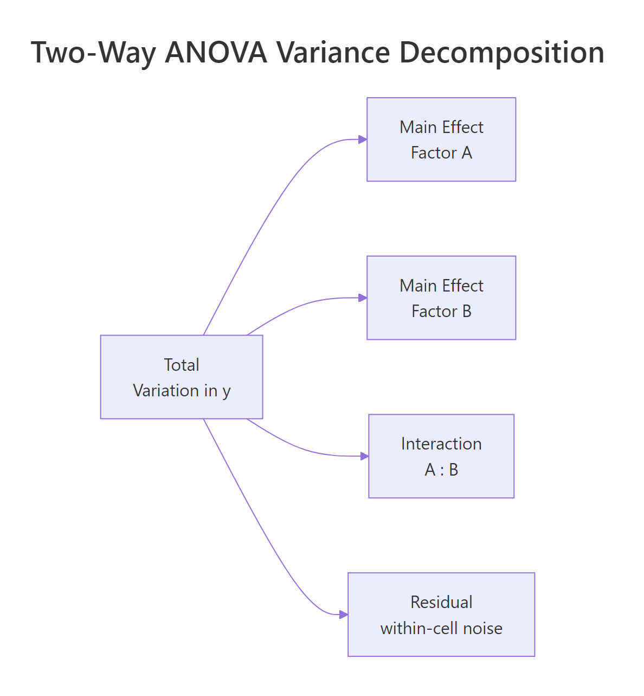
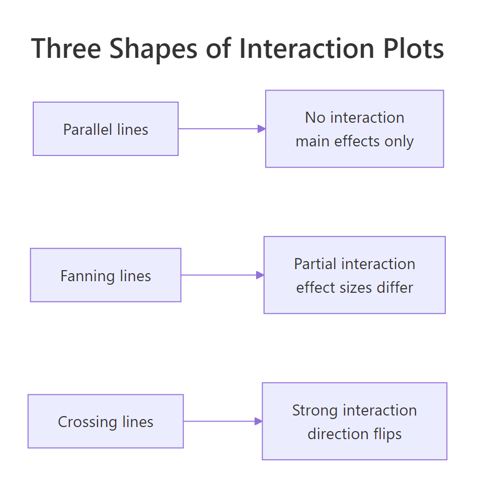
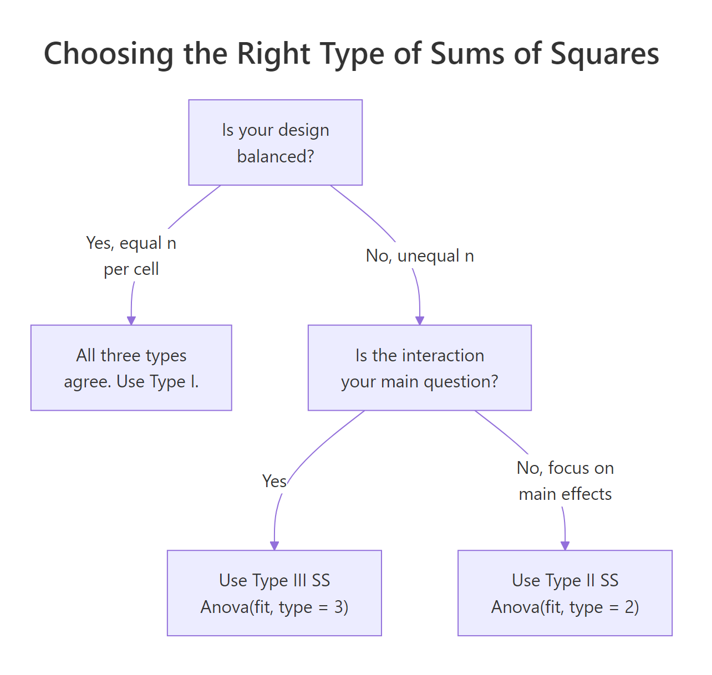

Two-Way ANOVA in R: Main Effects, Interactions, and Interaction Plots Interpreted
Two-way ANOVA tests whether two categorical factors, and the interaction between them, explain the variation in a numeric outcome. In R, you fit the model with aov(y ~ A * B, data = d), read the three F-tests from summary() or car::Anova(), and visualize how the factors combine with an interaction plot. This tutorial uses the built-in ToothGrowth dataset and walks you from the first aov() call all the way to simple-effect post-hoc tests with emmeans.
How does two-way ANOVA extend one-way ANOVA?
One-way ANOVA asks whether group means differ across a single factor. Two-way ANOVA asks the same question for two factors at once and, critically, whether the effect of one factor depends on the level of the other. The built-in ToothGrowth dataset gives you exactly that shape of problem: guinea-pig tooth length by vitamin C source (supp: OJ or VC) crossed with dose (0.5, 1, or 2 mg). A single aov() call fits both main effects and their interaction.
You already have the full answer in one table. Supplement type is highly significant (p = 0.00023), dose is even more so (p < 2e-16), and the supp:dose interaction is also significant (p = 0.022). That last row is what makes this a two-way ANOVA rather than two stacked one-way tests: it tells you the effect of supplement is not the same at every dose. We will unpack each of those three pieces in the next sections.
* operator in R formulas expands to main effects plus interaction. Writing len ~ supp * dose is identical to len ~ supp + dose + supp:dose. Using + alone fits an additive model with no interaction term, and you will miss the very effect two-way ANOVA was built to detect.Try it: Fit a two-way ANOVA on the built-in warpbreaks dataset with breaks as the outcome and wool * tension as the design. Save the fit to ex_fit and print its summary().
Click to reveal solution
Explanation: Both tension and the wool:tension interaction are significant, while wool on its own is borderline. That interaction p-value is why you should interpret the main effects carefully, which is what the next sections teach.
What are main effects and the interaction term?
Each row of that ANOVA table corresponds to one slice of the total variation in tooth length. A main effect is how much the average outcome shifts when you change one factor while averaging over the other. The interaction is how much those shifts depend on the other factor's level, the part that neither main effect alone can explain. The figure below shows the full decomposition.

Figure 1: Two-way ANOVA splits total variation into two main effects, an interaction, and residual noise.
The cleanest way to see those pieces is to look at the 2×3 grid of cell means. Each cell holds the average tooth length for one combination of supplement and dose.
At dose 0.5 the OJ mean (13.23) is 5.25 units above VC (7.98). At dose 1 the gap shrinks to about 5.9 but stays sizable. At dose 2 the two supplements are almost identical (26.06 vs 26.14). That narrowing gap is exactly the interaction signal, and the p-value of 0.022 in the earlier ANOVA table says the narrowing is larger than we would expect from random noise alone. Every cell has n = 10, which tells us the design is perfectly balanced, worth remembering when we reach the Type SS discussion.
dose the model would treat dose as continuous and fit one slope, giving you an ANCOVA rather than a two-way ANOVA. factor(dose) forces one coefficient per dose level so each cell mean is free to vary.Now compute the two sets of marginal means. These are what the main-effect F-tests are built from.
OJ averages 3.7 units higher than VC once we pool over doses, and longer teeth clearly track higher doses (10.6 → 19.7 → 26.1). Those two summaries are the main effects in plain language. The interaction is what remains after you subtract both of those trends from the cell means, and it is visible as the "pinched" shape of the OJ-VC gap at dose 2.
Try it: Using mtcars, treat cyl and gear as factors and compute the cell means of mpg. Save the result to ex_mt_cells.
Click to reveal solution
Explanation: Note the jagged counts (some cells have n = 1, one combination is empty). That is an unbalanced factorial design, which is exactly the case where the Sum-of-Squares type choice in section four starts to matter.
How do you read a two-way ANOVA interaction plot?
A picture of cell means makes the interaction jump out faster than any table. The classic interaction plot puts one factor on the x-axis, plots the mean of y for each level of the other factor as a line, and lets the shape tell the story.

Figure 2: Three interaction shapes: parallel lines (no interaction), fanning lines (partial interaction), crossing lines (strong interaction).
Base R gives you the plot in one line with interaction.plot(). It is ugly but fast and surprisingly effective for a first look.
The OJ line sits above VC at doses 0.5 and 1, then the two lines converge and essentially touch at dose 2. That is a textbook "fanning" shape: the effect of supplement is large at small doses, then shrinks to zero. It matches the 0.022 p-value we saw earlier.
For a publication-quality plot, layer ggplot2 with stat_summary() to get means and 95% confidence intervals in one call.
The error bars are the piece readers almost always want: at dose 0.5 the OJ and VC intervals clearly separate, while at dose 2 they overlap heavily. The plot confirms the fanning shape and shows where the supplement-level difference is and is not meaningful.
A third option is emmip() from the emmeans package, which pulls the means straight from your fitted model (not the raw data) and so is the one to report alongside ANOVA results.
The emmip() output looks almost identical to the ggplot2 version because the design is balanced. In unbalanced designs the two can drift apart, the raw-data plot shows what the data is, while emmip() shows what the model thinks about it.
Try it: Build a base-R interaction.plot() for warpbreaks: breaks by tension with wool as the trace factor.
Click to reveal solution
Explanation: The wool-A and wool-B lines cross between low and medium tension. Crossing lines are the classic visual cue for a strong qualitative interaction: one wool is best under low tension, the other wins elsewhere.
When do Type I, II, and III sums of squares matter?
Up to this point we read the ANOVA table straight from summary(fit). That gives you Type I (sequential) sums of squares: each effect is tested after adjusting for every effect listed before it in the formula. When the design is balanced, Type I, II, and III are all identical and there is nothing to worry about. When the design is unbalanced, they disagree, sometimes dramatically, and your choice of type changes the story.

Figure 3: Decision flow: balanced designs are unambiguous; unbalanced designs pick Type II or Type III by question.
Our ToothGrowth design has n = 10 in every cell, so let us first confirm the three types agree on a balanced dataset.
Every F-value and every p-value agrees across the three tables. That is the promise of a balanced design. Now drop a handful of rows to create an unbalanced version and watch what changes.
Watch the supp Sum Sq column: 161.49 in Type I, 168.33 in Type II, and 177 in Type III. The differences are small here because the imbalance is mild, but in real unbalanced designs the three types can flip a p-value from significant to non-significant. The interaction row is identical across types because nothing else in the model shares its variance.
options(contrasts = c("contr.sum", "contr.poly")) before fitting the model you pass to Anova(fit, type = 3), then restore the default afterwards. Forgetting this is the single most common two-way ANOVA reporting bug in the wild.Try it: Using the original balanced fit, run Anova(fit, type = 2) and compare its Sum Sq column against the numbers in the first summary(fit) call.
Click to reveal solution
Explanation: Balanced design, so Type II agrees with Type I digit for digit. The Anova() function from car also formats the table a little more cleanly than the default summary().
How do you run post-hoc tests and simple effects after two-way ANOVA?
When the interaction is significant, the main-effect pairwise tests are misleading: they average across a level where the factor does something different. The honest move is to report simple effects, the pairwise comparisons of one factor within each level of the other. emmeans handles this in one line.
At doses 0.5 and 1 mg, OJ is significantly better than VC by about 5.3 and 5.9 units. At 2 mg the difference is essentially zero (−0.08, p = 0.96). That is a much more useful story than the overall "OJ is better than VC" verdict from the main effect, and it is exactly what the interaction plot suggested visually.
Now flip the conditioning to compare doses within each supplement.
For OJ, the jump from 1 mg to 2 mg is not statistically significant once we adjust for multiple comparisons (p = 0.106). For VC, every dose pair differs significantly, and the 0.5 → 2 mg jump is more than 18 units. That mirrors the interaction plot: VC has more room to grow because it starts lower.
emmeans reports estimated marginal means, not raw cell means. In balanced designs they match. In unbalanced designs emmeans weights each cell equally (as the model intends) while a group_by() summary weights by cell n. Always use emmeans for post-hoc inference after ANOVA.Try it: Using the same fit, report the OJ dose comparisons (the supp = OJ block only). Which dose gaps are significant at α = 0.05?
Click to reveal solution
Explanation: The Tukey adjustment widens the p-values to account for three pairwise tests per supplement. Unadjusted, dose1 − dose2 would look significant; adjusted, it does not clear the bar.
How do you check assumptions for two-way ANOVA?
The assumptions are the same three as one-way ANOVA: residuals are approximately normal, variances are roughly equal across cells, and observations are independent. The only twist is that you now have a 2×3 (or larger) grid of cells to check across, not just a single factor. R's default diagnostic plots work out of the box.
The top-left panel (residuals vs fitted) checks equal variance, look for a uniform vertical spread across fitted values, no funnel or fan. The top-right panel (Q-Q plot) checks normality, points should track the diagonal reference line. For this model the residuals look reasonably well-behaved: the spread is even and the Q-Q tail deviation is mild.
A formal test of equal variances across cells is Levene's test, which is robust to non-normality.
The p-value of 0.148 is comfortably above 0.05. We have no evidence that cell variances differ, so the constant-variance assumption holds and the F-tests from summary(fit) are trustworthy.
Try it: Run shapiro.test(residuals(fit)) to formally check normality of the residuals. Is the p-value above 0.05?
Click to reveal solution
Explanation: p = 0.67 is well above 0.05, so we cannot reject the null hypothesis that the residuals are normal. Combined with the Q-Q plot and the Levene's test result, the classical ANOVA assumptions are all satisfied for this fit.
Practice Exercises
Exercise 1: Two-way ANOVA on warpbreaks with Type II SS
Fit a two-way ANOVA of breaks ~ wool * tension on the built-in warpbreaks dataset. Report which effects are significant at α = 0.05 using Type II sums of squares. Save the Anova() output to my_warp_aov.
Click to reveal solution
Explanation: Tension (p = 0.00065) and the wool:tension interaction (p = 0.021) are significant. The wool main effect is borderline (p = 0.058). Because the interaction is significant, you should not interpret the wool main effect on its own; go straight to simple effects.
Exercise 2: Simple effects inside wool A only
Using the warpbreaks fit from Exercise 1, report which tension levels differ significantly within wool type A only. Use emmeans with Tukey adjustment. Save the contrasts to my_wool_a_contrasts.
Click to reveal solution
Explanation: For wool A, low tension (L) produces significantly more breaks than medium or high tension, but medium and high are indistinguishable. Wool B's pattern will differ because the interaction was significant.
Exercise 3: How do Type I, II, and III SS change on unbalanced data?
Starting from ToothGrowth, drop 8 random rows (set.seed(42)) to create my_tg_unb. Fit the two-way model and print the Sum Sq column from Type I, Type II, and Type III ANOVAs. Which type would you report, and why?
Click to reveal solution
Explanation: Type II (176.8) and Type III (~184) inflate supp SS modestly compared to Type I (169.8) once the design is unbalanced. Type II is the usual default because it tests each main effect given the other, without conditioning on the interaction. Report Type II unless your question specifically asks about effects adjusted for the interaction.
Complete Example
Let us run a fresh end-to-end analysis using warpbreaks to cement every step in one script. This is the workflow you would use on a real project.
Design is balanced (9 per cell), so Type II matches Type I. Tension and the wool:tension interaction are significant. The emmip plot shows wool-A breaks falling sharply from L to M while wool-B falls less steeply, a fan that converges at high tension. Simple effects reveal that the drop from low to medium tension is significant for wool A but not wool B. Residuals pass Levene's and Shapiro-Wilk. That is a complete report in under 20 lines of code.
Summary
| Step | Function | Why | |
|---|---|---|---|
| Fit model | aov(y ~ A * B, data) |
Fits two main effects plus interaction in one call | |
| Read ANOVA table | summary(fit) or Anova(fit, type = 2/3) |
Three F-tests for supp, dose, interaction | |
| Visualize | interaction.plot() or emmeans::emmip() |
See interaction shape: parallel, fanning, crossing | |
| Choose SS type | Balanced → Type I; unbalanced → Type II (default) or Type III (full conditioning) | Unbalanced designs make the choice matter | |
| Post-hoc | `emmeans(fit, pairwise ~ A \ | B)` | Simple effects replace misleading main-effect pairwise tests |
| Check assumptions | plot(fit), leveneTest(), shapiro.test() |
Validate normality and equal variance |
References
- R Core Team. aov() documentation. Link
- Fox, J. and Weisberg, S. An R Companion to Applied Regression, 3rd Edition (2019). Sage. Documentation for the
carpackage andAnova(). Link - Lenth, R. emmeans: Estimated marginal means, aka least-squares means. Package vignettes. Link
- Langsrud, Ø. (2003). ANOVA for unbalanced data: Use Type II instead of Type III sums of squares. Statistics and Computing, 13, 163–167. Link
- Kutner, M. H., Nachtsheim, C. J., Neter, J., and Li, W. Applied Linear Statistical Models, 5th Edition (2005). McGraw-Hill. Chapter 19: Two-Factor Studies.
- UCLA Office of Advanced Research Computing. R Library: Analysis of Variance. Link
- Wickham, H. ggplot2: Elegant Graphics for Data Analysis, 3rd Edition. Section on interaction plots. Link
Continue Learning
- One-Way ANOVA in R, build the single-factor intuition before combining two factors.
- Post-Hoc Tests After ANOVA, compare Tukey, Bonferroni, and Scheffé adjustments for multiple comparisons.
- Interaction Effects in R, push interactions beyond ANOVA into regression with continuous moderators.